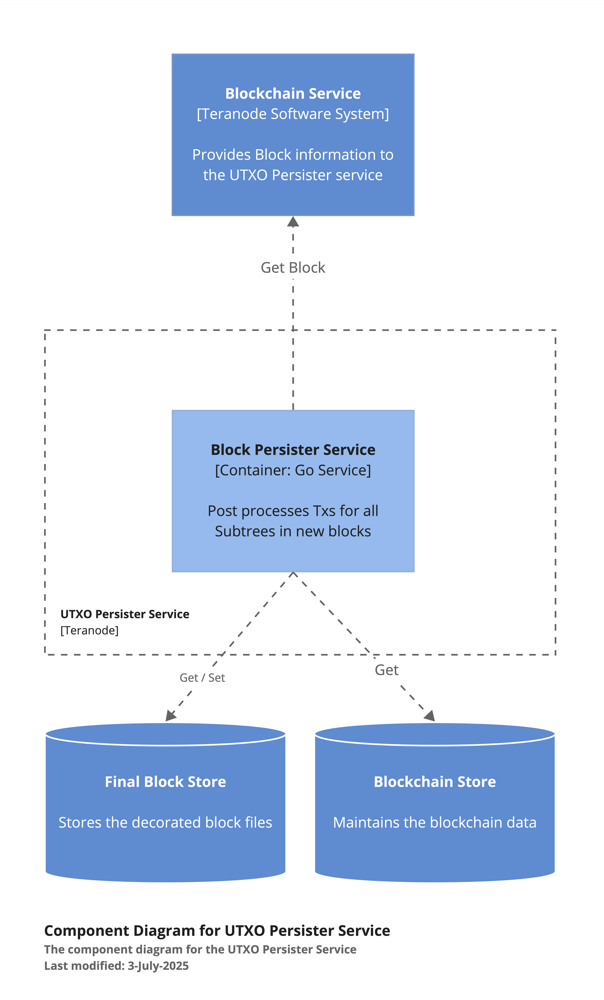

Teranode Microservices Overview
Index
- Teranode Microservices Overview
- 1. Introduction
- 2. Core Services
- 3. Overlay Services
- 4. Stores
- 5. Other Components
- 6. Interaction Patterns
- 7. Related Resources
1. Introduction
Teranode is designed as a collection of microservices that work together to provide a scalable and efficient blockchain network. This document provides an overview of each microservice, its responsibilities, and how it interacts with other components in the system.
2. Core Services
2.1 Asset Server
The Asset Server acts as an interface to various data stores, handling transactions, subtrees, blocks, and UTXOs. It uses the HTTP protocol for communication.
Key Responsibilities:
- Provide access to blockchain data
- Handle data retrieval requests from other services and external clients
- Serve as a facade for various data stores
Data Models:
- Blocks
- Block Headers
- Subtrees
- Extended Transactions
- UTXOs
Key Interactions:

- Interacts with UTXO Store, Blob Store (Subtree and TX Store), and Blockchain Server
- Provides data to other Teranode components and external clients over HTTP/WebSockets

HTTP Endpoints:
- getTransaction() and getTransactions()
- GetTransactionMeta()
- GetSubtree()
- GetBlockHeaders(), GetBlockHeader() and GetBestBlockHeader()
- GetBlock() and GetLastNBlocks()
- GetUTXO() and GetUTXOsByTXID()
You can read more about this service here.
2.2 Propagation Service
The Propagation Service is responsible for receiving and forwarding transactions across the network.
Key Responsibilities:
- Receive transactions from the network through multiple communication channels (gRPC, UDP over IPv6 and HTTP)
- Perform initial sanity checks on transactions
- Forward valid transactions to the TX Validator Service
Key Interactions:

- Receives transactions from other nodes via IPv6 multicast, gRPC or HTTP
- Forwards transactions to the TX Validator Service

Technology Stack:
- Go programming language
- UDP and HTTP for network communication
- gRPC and Protocol Buffers for service communication
You can read more about this service here.
2.3 Validator Service
The TX Validator Service checks transactions against network rules and updates their status in the UTXO store.
Key Responsibilities:

- Validate transactions against network rules and Bitcoin consensus rules
- Update transaction status in the UTXO store
- Forward validated transaction IDs to the Block Assembly Service
- Notify P2P subscribers about rejected transactions

Key Processes:
- Receiving transaction validation requests
- Validating transactions (including checks for double-spending)
- Updating UTXO store with new transaction data
- Propagating validated transactions to Block Assembly and Subtree Validation services
Data Model:
- Extended Transaction format
Technology Stack:
- Go programming language
- gRPC for service communication
- Kafka for message queuing (optional)
- BSV libraries for transaction validation
You can read more about this service here.
2.4 Subtree Validation Service
This service validates newly received subtrees, adds metadata, and persists them in the Subtree Store.

Key Responsibilities:
- Validate subtrees received from other nodes
- Add metadata to subtrees for block validation
- Store validated subtrees in the Subtree Store

Key Processes:
- Real-time validation of subtrees
- UTXO validation for transactions within subtrees
- Handling unvalidated transactions within subtrees
You can read more about this service here.
2.5 Block Validation Service
The Block Validation Service processes new blocks, checking their validity before they are added to the blockchain.

Key Responsibilities:
- Validate new blocks
- Coordinate with Subtree Validation Service for missing subtrees
- Update the blockchain with validated blocks

Key Processes:
- Receiving blocks for validation
- Validating block structure, Merkle root, and block header
- Catching up after a parent block is not found
- Marking transactions as mined
Data Models:
- Blocks
- Subtrees
- Extended Transactions
- UTXOs
You can read more about this service here.
2.6 Block Assembly Service
This service is responsible for creating subtrees and assembling block templates for miners.
Key Responsibilities:

- Organize transactions into subtrees
- Create block templates from subtrees
- Broadcast new subtrees and blocks to the network
- Handle blockchain reorganizations and forks

Key Processes:
- Receiving transactions from the TX Validator Service
- Grouping transactions into subtrees
- Creating mining candidates
- Processing subtrees and blocks from other nodes
- Handling forks and conflicts
Data Models:
- Blocks
- Subtrees
- UTXOs
You can read more about this service here.
2.7 Blockchain Service
The Blockchain Service manages block updates and maintains the node's copy of the blockchain.

Key Responsibilities:
- Add new blocks to the blockchain
- Manage block headers and subtree lists
- Provide blockchain state information to other services
- Handle block invalidation and chain reorganization

Key Processes:
- Adding new blocks to the blockchain
- Retrieving blocks and block headers
- Invalidating blocks
- Managing subscriptions for blockchain events
Data Model:
- Blocks (including block header, coinbase TX, and block merkle root)
You can read more about this service here.
2.8 Alert Service
The Alert Service handles system-wide alerts and notifications, including UTXO freezing and block invalidation.

Key Responsibilities:
- Distribute important network alerts
- Manage alert prioritization and dissemination
- Handle UTXO freezing, unfreezing, and reassignment
- Manage peer banning and unbanning
- Handle block invalidation requests

Key Processes:
- UTXO freezing and unfreezing
- UTXO reassignment
- Block invalidation
- Peer management
You can read more about this service here.
3. Overlay Services
3.1 Block Persister Service
This service post-processes blocks, adding transaction metadata and storing them as files.

Key Responsibilities:
- Decorate transactions in blocks with metadata
- Store processed blocks in a block data storage system
- Create and store UTXO addition and deletion files

Key Processes:
- Receiving and processing new block notifications
- Decorating transactions with UTXO metadata
- Creating and storing block, subtree, and UTXO files
Data Models:
- Blocks
- Subtrees
- UTXOs (additions and deletions)
You can read more about this service here.
3.2 UTXO Persister Service
The UTXO Persister maintains an up-to-date record of all unspent transaction outputs.
Key Responsibilities:
- Process new blocks to update the UTXO set
- Maintain UTXO set files for each block
- Create and maintain an up-to-date UTXO file set for each block in the blockchain

Key Processes:
- Monitoring for new block files
- Processing UTXO additions and deletions
- Generating UTXO set files
- Tracking progress of processed blocks
Data Model:
- UTXO set (collection of unspent transaction outputs)
- UTXO components: TxID, Index, Value, Height, Script, Coinbase flag
Technology Stack:
- Go programming language
- Blob store for file storage
- Bitcoin SV libraries for blockchain operations
You can read more about this service here.
3.3 P2P Service
The P2P Service manages peer-to-peer communications within the network.

Key Responsibilities:
- Handle peer discovery and connection management
- Facilitate message passing between nodes
- Manage subscriptions for blockchain events
- Handle WebSocket connections for real-time notifications

Key Processes:
- Peer discovery and connection
- Managing best block messages
- Handling blockchain messages (blocks, subtrees, mining)
- Processing TX validator messages
- Managing WebSocket notifications
You can read more about this service here.
3.4 Legacy Service
The Legacy Service facilitates communication between Teranode and traditional Bitcoin SV nodes.

Key Responsibilities:
- Receive blocks and transactions from legacy nodes
- Disseminate new blocks to legacy nodes
- Transform data between BSV and Teranode formats
Key Processes:
- Receiving inventory notifications from BSV nodes
- Processing new blocks and converting them to Teranode format
- Handling requests from Teranode components for legacy data
You can read more about this service here.
3.5 RPC Service
The RPC Service provides compatibility with the Bitcoin RPC interface, allowing clients to interact with the Teranode node using standard Bitcoin RPC commands.
Key Responsibilities:
- Handle incoming RPC requests
- Process and validate RPC commands
- Interact with core Teranode services to fulfill requests
- Provide responses in Bitcoin-compatible format
Supported RPC Commands:
- createrawtransaction, generate, getbestblockhash, getblock, sendrawtransaction, stop, version, getminingcandidate, submitminingsolution, getblockchaininfo, getinfo, getpeerinfo
Key Processes:
- Authenticating RPC requests
- Routing requests to appropriate handlers
- Executing commands and interacting with other Teranode services
- Formatting and returning responses
Technology Stack:
- Go programming language
- HTTP/HTTPS for RPC communication
- JSON for request/response formatting
You can read more about this service here.
4. Stores
4.1 TX and Subtree Store (Blob Server)
The Blob Server is a generic datastore used for storing transactions (extended tx) and subtrees.

Key Responsibilities:
- Store and retrieve transaction data
- Store and retrieve subtree data
- Provide a common interface for various storage backends
Supported Storage Backends:
- File System
- Google Cloud Storage (GCS)
- Amazon S3
- MinIO
- SeaweedFS
- SQL (PostgreSQL)
- In-memory storage
Key Interactions:
- Used by Asset Server for retrieving transaction and subtree data
- Utilized by Block Assembly for storing and retrieving subtrees
- Accessed by Block Validation for transaction and subtree verification
Data Models:
- Extended Transaction Data Model
- Subtree Data Model
You can read more about this store here.
4.2 UTXO Store
The UTXO Store is responsible for tracking spendable UTXOs based on the longest honest chain-tip in the network.

Key Responsibilities:
- Maintain the current UTXO set
- Handle UTXO creation, spending, and deletion
- Manage block height for determining UTXO spendability
- Support freezing, unfreezing, and reassigning UTXOs

Supported Storage Backends:
- Aerospike (primary production datastore)
- In-memory store
- SQL (PostgreSQL and SQLite)
- Nullstore (for testing)
Key Interactions:
- Used by Asset Server for UTXO data retrieval
- Accessed by Block Persister for UTXO metadata
- Utilized by Block Assembly for coinbase UTXO management
- Interacts with Block Validation for UTXO verification
- Supports Transaction Validator for UTXO operations
Data Model:
- UTXO Meta Data, including transaction details, parent transaction hashes, block IDs, fees, and other metadata
You can read more about this store here.
5. Other Components
5.1 Kafka Message Broker
Kafka serves as the messaging middleware for inter-service communication in Teranode.
Key Responsibilities:
- Facilitate asynchronous communication between services
- Ensure reliable message delivery
- Support high-throughput data streaming
Key Topics and Use Cases:
kafka_validatortxsConfig: Used for transmitting new transaction notifications from Propagation to Validatorkafka_txsConfig: Used for forwarding valid transactions from Validator to Block Assemblykafka_txmetaConfig: Used for sending new UTXO metadata from Validator to Subtree Validationkafka_rejectedTxConfig: Used for notifying P2P about rejected transactionskafka_blocksConfig: Used for propagating new blocks from P2P to Block Validationkafka_subtreesConfig: Used for sending new subtrees from P2P to Subtree Validationkafka_blocksFinalConfig: Used for sending finalized blocks from Blockchain to Block Persister
Key Features:
- Supports high-throughput data streaming
- Provides fault-tolerance and durability
- Allows for scalable message consumption
You can read more about how Kafka is used here.
5.2 Miners
Miners are responsible for the computational work of finding valid blocks.
Key Responsibilities:
- Perform proof-of-work calculations
- Broadcast newly found blocks
6. Interaction Patterns
- Propagation Service receives transactions and forwards them to TX Validator via Kafka
- TX Validator validates transactions, updates UTXO Store, and forwards to Block Assembly and Subtree Validation via Kafka
- Block Assembly receives validated transactions from TX Validator via Kafka
- Subtree Validation Service validates subtrees and interacts with TX Validator for missing transactions
- Block Validation Service coordinates with Subtree Validation Service for block processing
- P2P Service propagates new blocks and subtrees to Block Validation and Subtree Validation via Kafka
- Blockchain Service sends finalized blocks to Block Persister via Kafka
- UTXO Store interacts with multiple services for UTXO management and validation
7. Related Resources
-
Core Services:
-
Overlay Services:
-
Stores:
-
Messaging: